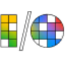

L
Loqui-AiИзучение языков
«Loqui-Ai» помогает изучать выбранный язык.
Раздел «Для студентов»: варианты ИИ для этой задачи, описания возможностей и переходы к обзорам. Сравните несколько решений на одинаковом примере.
Дайте свои записи и перечень тем занятия. В Молекуле можно собрать вопросы для самопроверки и заметить пробелы; определения и правильность ответа сверяйте по учебным материалам.
По моему конспекту экономики подготовь вопросы для повторения и список неполных определений. Ответы основывай на записи. Если данных недостаточно, укажи, какую тему перечитать.
«Loqui-Ai» помогает изучать выбранный язык.
Для «Math Bot» сначала определите свою задачу и требуемый результат. Карточка относится к направлению «Помощь в учебе».
Slider создаёт структуру и оформление презентации по запросу или загруженному документу. В сервисе предусмотрены диаграммы, библиотека шаблонов и набор фирменных элементов. Совместное редактирование дополняет подготовку слайдов; для ИИ-задач используются GigaChat и YandexAI в рамках российского онлайн-редактора презентаций.
«Socrates» разбирает содержимое документов.
«Study Buddy» представлен в разделе «Образование». При выборе проверьте нужную операцию и условия работы с результатом.
Для «SYNAPSE» сначала определите свою задачу и требуемый результат. Карточка относится к направлению «Образование».
Сравнивать «Think In Italian» с другими инструментами раздела «Образование» удобнее на одинаковом исходном материале.
«Verve AI - Interview Copilot» представлен в разделе «Образование». При выборе проверьте нужную операцию и условия работы с результатом.
VLEX AI собирает текстовые, визуальные и голосовые модели в общем веб-интерфейсе. Пользователь обращается к разным нейросетям из одного аккаунта, выбирая инструмент для нужного материала. Сервис ориентирован на российскую аудиторию и поддерживает оплату картой российского банка.
«101.school» работает с учебными курсами. «101.school» также помогает организовать обучение по теме.
AcademicHelp AI Writer создаёт эссе по теме, которую задаёт пользователь. Инструмент использует ИИ для подготовки целого текстового материала и ориентируется на академическое письмо. Назначение связано с получением черновика по определённому предмету: пользователь предоставляет тему, а система формирует связное письменное изложение.
«AI Homework Helper (aihomeworkhelper.co)» помогает разбирать учебный материал.
«AI math solver» помогает разобрать математическое упражнение.
«AI Tutor» помогает организовать обучение по теме.
AiSearh объединяет текстовые, графические, звуковые и видеомодели в общем веб-интерфейсе. Среди задач предусмотрены написание текста и кода, изображения, озвучка и ролики. Встроенная ИИ-среда для сайтов и приложений дополняется расширением Chrome и Telegram-ботом, связывая разные виды генерации с несколькими способами доступа к платформе.
Сравнивать «anki-decks.com» с другими инструментами раздела «Образование» удобнее на одинаковом исходном материале.
«avtor24» представлен в разделе «Создание текстов». При выборе проверьте нужную операцию и условия работы с результатом.
Chatty Tutor предназначен для изучения английского: предлагает работу с диалогами, словарным запасом и произношением. Его можно рассматривать для практики коротких разговорных ситуаций. Выберите знакомую тему, повторите реплики и проверьте, понятна ли обратная связь; автоматическая оценка сама по себе не объясняет каждую речевую ошибку.
Сравнивать «Coach Me Up!» с другими инструментами раздела «Помощь в учебе» удобнее на одинаковом исходном материале.
Сравнивать «Helper Systems: kOS» с другими инструментами раздела «Работа с документами» удобнее на одинаковом исходном материале.

«I/O Crossword» представлен в разделе «Викторины и квизы». При выборе проверьте нужную операцию и условия работы с результатом.
«IELTS CHAMP» представлен в разделе «Образование». При выборе проверьте нужную операцию и условия работы с результатом.
Для «JotBot AI» сначала определите свою задачу и требуемый результат. Карточка относится к направлению «Транскрибация аудио».
Для «Kasper» сначала определите свою задачу и требуемый результат. Карточка относится к направлению «Чат-боты и ассистенты».

Khanmigo рассчитан на задачи, где нужно готовить текст по теме и требованиям к содержанию. Ещё одно направление работы: готовить учебный материал и объяснения.
«Kickresume» помогает подготовить резюме. «Kickresume» собирает сопроводительное письмо по сведениям кандидата.
Langotalk предлагает языковое обучение через чат с ИИ. Можно практиковать речь на разных языках и работать с запоминанием материала. Разговорный формат объединяет учебное содержание и практику в персональном взаимодействии: пользователь обращается к изучаемому языку через диалог и предусмотренные обучающие возможности помощника.
«Language REACTOR» работает с текстом субтитров. Дополнительно «Language REACTOR» помогает изучать выбранный язык.
LeinGPT объединяет текстовые модели и генерацию визуальных материалов в одном интерфейсе. Также доступны музыка и озвучивание. Российский агрегатор работает через веб и Telegram, а расчёты в рублях дополняют использование разных ИИ-инструментов при подготовке выбранного пользователем текстового или медиаматериала.
Masha GPT объединяет доступ к нескольким текстовым нейросетям в русскоязычном чате. Описаны также направления генерации картинок, видео и музыкальных материалов с использованием разных моделей. Продукт представляет общий вход к таким задачам, где работа с текстом соседствует с подготовкой визуального и звукового контента.
«Memrizz AI Flashcard Generator» представлен в разделе «Образование». При выборе проверьте нужную операцию и условия работы с результатом.
«Quetext» проверяет признаки происхождения или заимствования текста.
Сравнивать «Stream Slides» с другими инструментами раздела «Видео» удобнее на одинаковом исходном материале.
«StudyCrumb» перерабатывает формулировки написанного текста.
Для «Wizco» сначала определите свою задачу и требуемый результат. Карточка относится к направлению «HR».
«Writeless» готовит текстовый черновик по условиям задачи.
ChatINFO предоставляет разговорный интерфейс и средства генерации текстов прямо в браузере. Среди задач есть статьи и сочинения, рерайт и проверка написания. Помощь с кодом и творческими материалами дополняет набор инструментов российского сервиса для работы с письменным содержанием пользователя.
Для «fast AI» сначала определите свою задачу и требуемый результат. Карточка относится к направлению «Образование».
Сравнивать «GPT Book Club» с другими инструментами раздела «Суммаризация» удобнее на одинаковом исходном материале.
Сравнивать «History Timelines» с другими инструментами раздела «Образование» удобнее на одинаковом исходном материале.
«LessonTime AI» представлен в разделе «Образование». При выборе проверьте нужную операцию и условия работы с результатом.
Сравнивать «Microsoft Reading Coach» с другими инструментами раздела «Образование» удобнее на одинаковом исходном материале.
«ProfBot» представлен в разделе «Чат-боты и ассистенты». При выборе проверьте нужную операцию и условия работы с результатом.

SciSpace объединяет поиск научных публикаций и диалог по PDF. Помогает разбирать сложные фрагменты, сравнивать найденные работы и связывать ответы с разделами исходного документа.
«Sygmatic» помогает изучать выбранный язык.
Сравнивать «Typeng» с другими инструментами раздела «Образование» удобнее на одинаковом исходном материале.
«ExamCram» работает с вопросами для проверки знаний.
Adaptiv Academy предлагает индивидуальные онлайн-курсы с адаптивным обучением на основе ИИ. Пользователь может находить курсы и отслеживать продвижение, а мобильные приложения напоминают о занятиях. Платформа связывает выбор учебного материала с организацией его прохождения, чтобы обучение рассматривалось как последовательность действий, а не отдельная неподвижная подборка текстов.
Страница 4 из 5